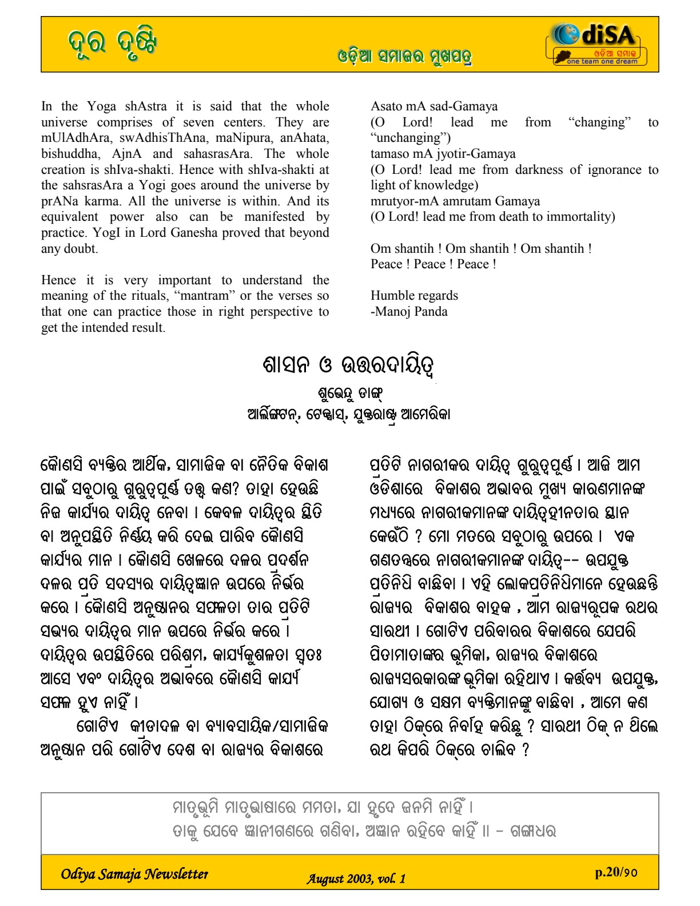

Duradrusti · local reading edition
August 2003 · page 20
All issues · View this page in the PDF

Jump to a page
Source notes
These page images were rendered from the preserved published PDF captured on 2005-01-06. They are new reading copies, not recovered original website images. Page numbers follow the PDF sequence, including covers, and may differ from printed page numbers. The original PDF is unchanged. Capture dates are not publication dates.
The images preserve the printed Odia typography; they are not searchable text transcriptions. Open the original PDF · PDF and Word downloads · Preservation record